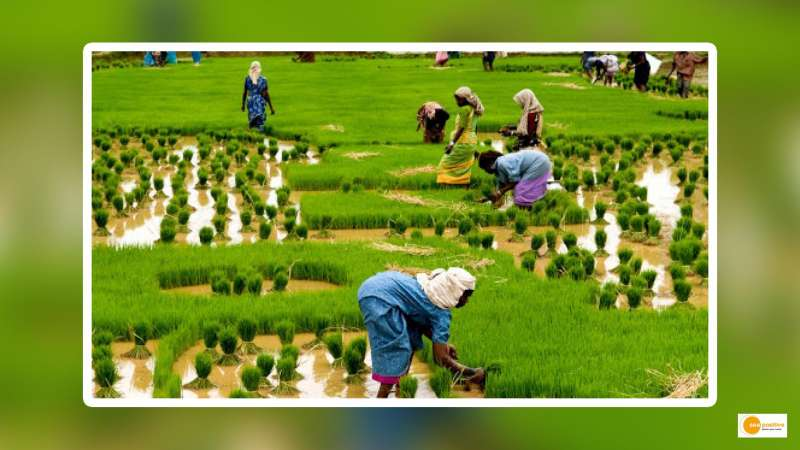

Important of agriculture

About 49 percent of the population in India is dependent on agriculture. 141 million hectares is the net sown area while 195 million hectares is the gross cropped area. Agriculture contributes to 14 percent of GDP and the distribution of income and wealth. The vast relief of the country, varied climate, and soil conditions cause provision for a variety of crops. Allt types of tropical, subtropical, and temperate crops are grown in India, but predominantly 2/3rd of total cropped area food crops are cultivated. (1) Source of Livelihood: The incoming sources of many peoples depends on the agriculture, about 70% population of directly rely with agriculture for livelihood. This gigantic ratio in this sector is as a result of none development of non-agricultural activities to absorb the fast-growing population. Nevertheless, mostly populations of developed countries do not rely on agriculture. (2) Contribution to National revenue: Mostly developing counties depends on agriculture for their source of national income. While for developed countries it contributes as a smallest ration to their national income. (3) Supply of Food as well as Fodder: It provides feed and silage to the domestic animals. Moreover, livestock provides milk and proteins as people’s food requirements.
Aspects Table
| Beneficial Aspects | Negative Aspects |
|---|---|
| plant‐associated bacteria | Microorganisms Causing Plant Diseases |
| rhizosphere interactions | Bacterial Infection in Plants |
| plant responses to bacterial quorum‐sensing (QS) signals | Fungal Infection in Plants |
| endophyte applications | Viral Infection in Plants |